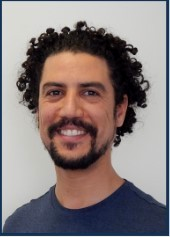

S
Profile of
Younes Wagner

Experienced Senior Administrator with a demonstrated history of working experience in the human resources industry.
Skilled in administration and Human Ressources Management, Software Development and Software Quality. Using multiple microsoft products such as Visual studio in the programming field like C# language , and also the DataBase Management System SQLserver, and web development in ASP.net J2EE, and Javascript.
Strong program solver and project management professional with a Bachelor of Applied Science - BASc focused in Software Quality from Mohammed V University in Rabat and currently student at the Digital Career Institute Düsseldorf.